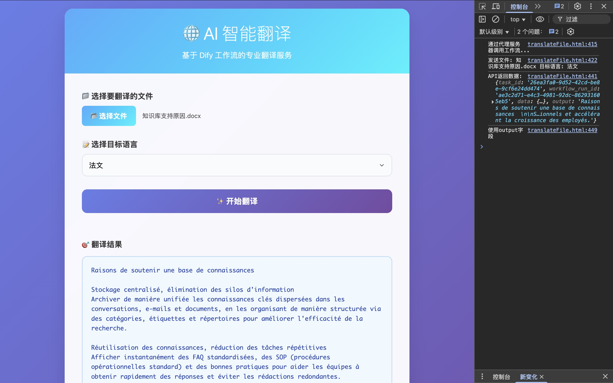

Dify 文件翻译工具
开发时间：2025年7月
🚀 项目简介
这是一个基于 Dify 平台开发的现代化文件翻译工具，提供简洁美观的 Web 界面，让用户能够轻松上传文件并获取高质量的多语言翻译结果。项目采用前后端分离架构，集成了 Dify 的强大 AI 能力，为用户提供专业的翻译服务。
✨ 核心功能
现代化界面
采用响应式设计，提供美观易用的 Web 界面，支持各种设备访问
多语言支持
支持中、英、日、韩、法、德、西、俄、意、葡等10种主流语言互译
文件翻译
直接上传文件进行翻译，支持多种文档格式，无需复制粘贴
格式化输出
自动处理 Markdown 格式，保持原文档结构，提供清晰的翻译结果
一键启动
简化的启动流程，运行一个脚本即可启动所有服务
易于部署
纯 Python 实现，无需复杂配置，支持本地部署
🛠️ 技术架构
前端技术
- 纯 HTML/CSS/JavaScript 实现
- 响应式设计，适配各种设备
- 无外部依赖，轻量级部署
- 现代化 UI 设计
后端技术
- Python HTTP 服务器
- 文件上传处理机制
- 代理请求转发
- 响应格式化处理
AI 集成
- Dify 工作流 API 集成
- 多语言翻译模型
- 智能文本处理
- 格式保持算法
🌟 使用体验
1
上传文件
点击"选择文件"按钮，上传需要翻译的文档
2
选择语言
从下拉菜单中选择目标翻译语言
3
开始翻译
点击"开始翻译"按钮，等待 AI 处理
4
获取结果
翻译结果将自动显示在页面下方
📸 界面预览

简洁现代的翻译工具界面，支持文件上传和多语言选择
🎯 开发心得
这个项目让我深入了解了 AI 应用开发的完整流程，从前端界面设计到后端 API 集成，再到 AI 模型的调用。通过与 Dify 平台的集成，我学会了如何构建一个完整的 AI 应用，包括文件处理、跨域请求、响应格式化等关键技术。
项目的亮点在于简化了用户体验，用户只需要上传文件就能获得高质量的翻译结果，无需复杂的操作。同时，一键启动的部署方式也大大降低了使用门槛。